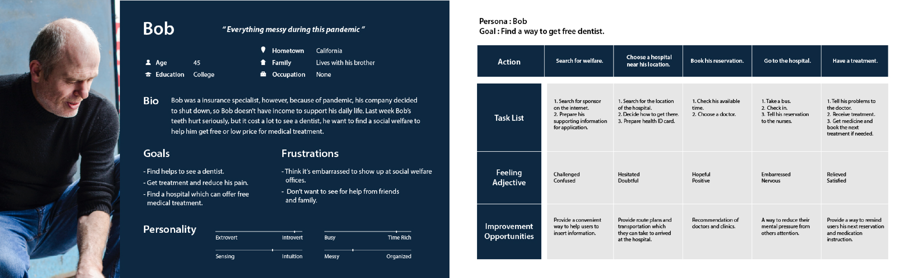
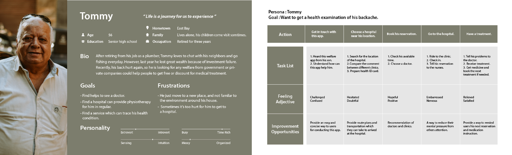
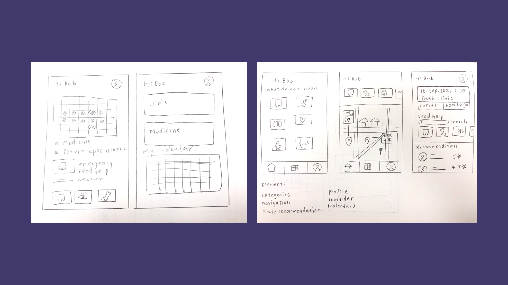
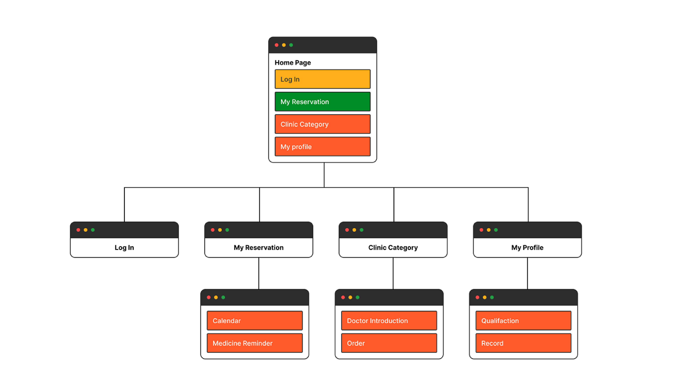
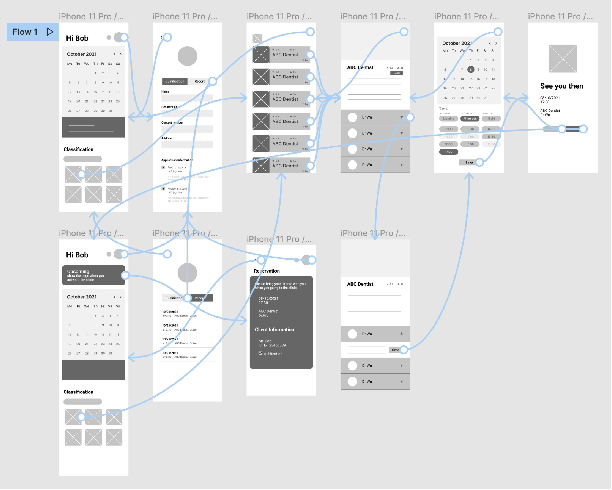
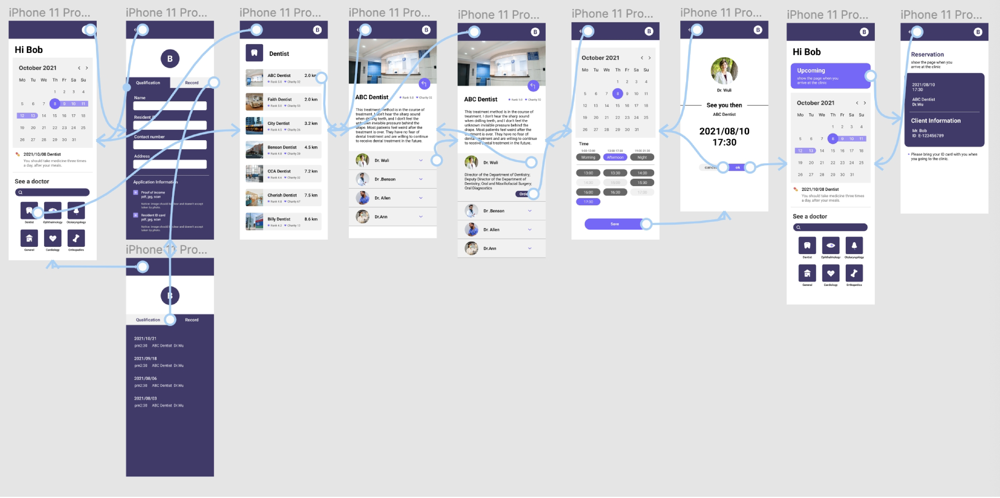
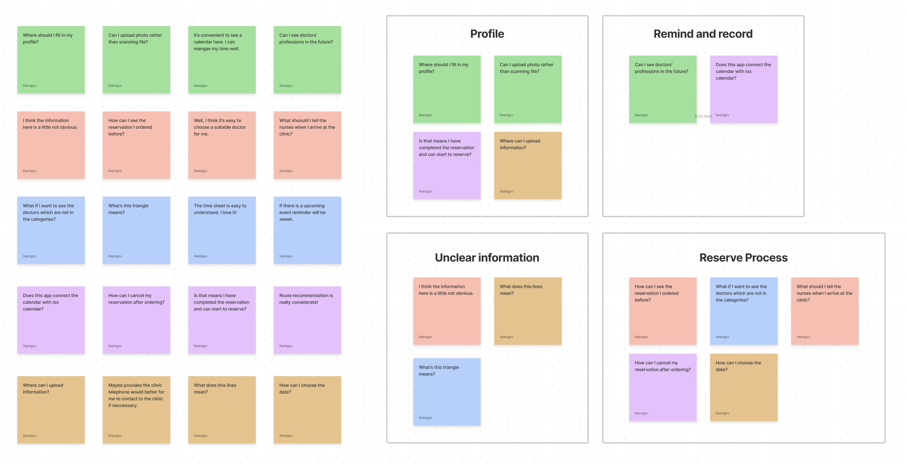
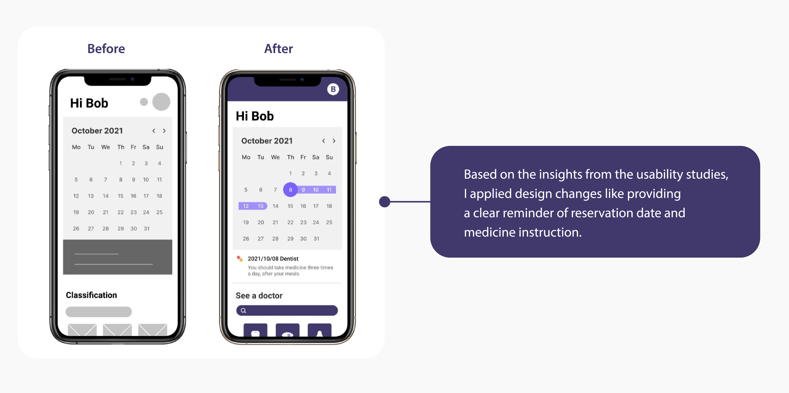
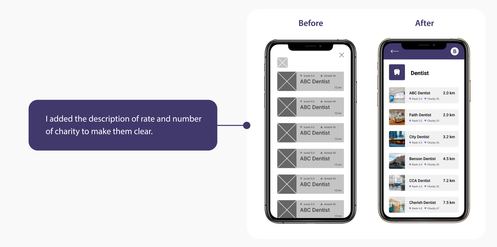

Project Brief
Creating a website for Medical Charity, which can provide users to reserve treatment and provide information to them. So my goals are to design a smooth ordering process and relaxing reservation experience in order to increase users' satisfaction.
Primary Persona / User Journey Map

Secondary Persona / User Journey Map

Ideation
I did a quick ideation exercise to come up with ideas for how to address gaps identified in the competitive audit. My focus was specifically on clinic category and route recommendation.

Information Architecture

Low-fidelity Prototype
To prepare for usability testing, I created a low-fidelity prototype that connected the user flow of reserving a treatment.

High-fidelity Prototype

Usability Study : Findings
These were the main findings uncovered by the usability study:
Calendar -
People hope that the calendar can remind them when the date of treatment is coming.
Information -
People confused about some of icons' meaning.
Profile -
People want profile place more obvious.

Refining The Design

